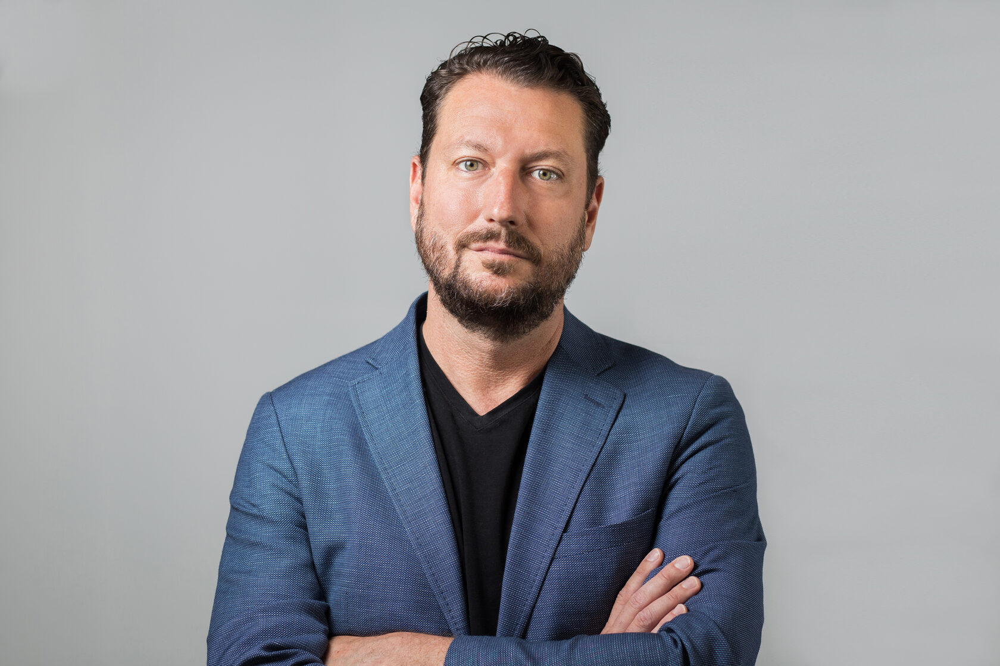
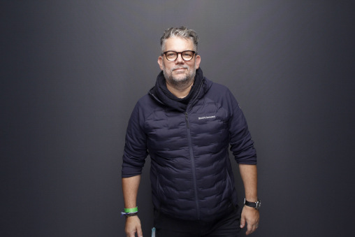

Wir sind ein Duo. Sie arbeiten mit uns beiden, ohne Pyramide dahinter, ohne ausgedünnte Juniormannschaft. Ergänzt mit ausgewählten Spezialisten, wo es Sinn macht.

Boris hat mehrere Unternehmen gegründet und mitaufgebaut, darunter ein Unicorn und mehrere Scale-ups in unterschiedlichen Stadien und Branchen. Diese Jahre haben ihm eine sehr praktische Sicht darauf gegeben, was eine Organisation wirklich trägt, und was nur gut aussieht, bis der Druck steigt.
Heute ist sein Fokus die Arbeit nah an Entscheidungen. Als Sparring-Partner für Founder und Führungsteams, die Klarheit, Ausrichtung und Handlungsfähigkeit zurückgewinnen wollen, wenn der Markt, das Team oder die eigene Geduld nachgibt. Seine Arbeit verbindet praktische Erfahrung, strategisches Denken und eine strenge Haltung zu Lernen und Eigenverantwortung: Beratung, die Ownership nicht abnimmt, sondern zurückgibt.
Als Innosuisse Expert Coach sieht er jährlich über 30 Gründer-Teams in der Frühphase. Das hält seinen Blick geschärft dafür, wo Organisationen stolpern, und wie man wieder auf die Beine kommt, ohne das Gesicht zu verlieren. Als IMD Startup Strategist begleitet er Teams durch strategische Weichenstellungen, als Gastredner an der Stanford University teilt er diese Perspektiven auch in der Ausbildung. 2023 wurde er vom Bilanz-Magazin als „Digital Shaper" ausgezeichnet.

Marc kommt aus dem Maschinenraum. Über viele Jahre hat er in grossen Organisationen Plattformen, Workflows und Teams aufgebaut, und die unbequeme Wahrheit mitgenommen, dass die besten Strategien scheitern, wenn die Umsetzung nicht steht.
Sein Beitrag im Duo ist das Handwerk: Er übersetzt das, was in Diagnose und Sparring entsteht, in konkrete Werkzeuge, Workflows und Organisationsformen. Pragmatisch, iterativ, gerne mit modernen Tools, aber nie in die Tool-Falle. Die Arbeit muss hinterher in Ihren Händen weiterlaufen, nicht in seinen.
„Boris hat mir geholfen, die Lücken im Unternehmen durch strategische Planung sichtbar zu machen. Diese Lücken habe ich anschliessend mit grossartigen Menschen gefüllt — die das viel besser können als ich selbst."
„Mit Boris haben wir die Werkzeuge erhalten, die wir brauchen, um effizient und nachhaltig zu wachsen."
„Boris hat uns geholfen, Klarheit über Ziele und Strategie zu gewinnen — und wie sich das bis in Aufgaben und Deliverables durchträgt. Innerhalb eines Jahres haben wir uns zum Besseren verändert, und das gesamte Team kann jetzt mit Boris' Werkzeugen und Wissen eigenständig weiterarbeiten."
„Boris hat uns von Anfang an verstanden und sofort erkannt, wo unsere Herausforderungen lagen und wie er uns am effizientesten helfen konnte."
„Boris hat uns an den richtigen Stellen hinterfragt und mehr als einmal gesagt: das ist noch nicht konkret genug. Er hat uns geholfen, den Fokus wiederzufinden, und wir wissen jetzt, wo wir Nein sagen müssen."
Starten Sie mit dem Signal Check oder schreiben Sie uns direkt. Erste Gespräche sind immer zu zweit, weil Sie auch zu zweit mit uns arbeiten werden.